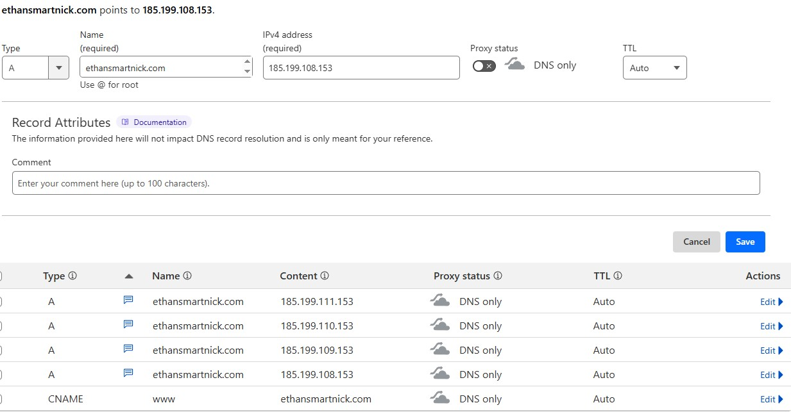

Purchasing
Purchasing a domain is very straightforward. All you need to do is visit a domain registrar of your choice. I recommend Namecheap, Cloudflare, or Porkbun.
I chose Cloudflare because it offered the lowest price for my domain. The only trade-off is that with the free plan, you're required to use Cloudflare's DNS. However, since I'm not currently equipped to manage my own DNS securely, this actually worked in my favor—giving me added security and peace of mind.
Once you purchase a domain, you have exclusive rights to use and manage it for the duration of your registration, provided you comply with the registrar’s terms and conditions. This is essentially a lease, you don’t truly own the domain, but you control it as long as you maintain your registration.
Routing
With this newly purchased domain, it's essentially inactive in the abyss until routed properly. This is typically done using an "A record", which directs your domain to your host server via its IP address.
Setting up the A record is fairly straightforward. All you need is your host server’s IP. Since I'm using GitHub Pages in this example, I can find their IP addresses here. GitHub Pages uses multiple IP addresses for load balancing and redundancy, that’s why there isn’t just one.
Once you have your host's IP address(es), you’ll need to navigate to the records section of your domain's DNS settings.
From here, you’ll then add the appropriate record type using your host’s IP.
You’ll notice I already have the appropriate IP addresses added for this domain, but I filled in the field at the top like I would be adding a new record. You also may notice a "CNAME" record as well. A CNAME tells DNS “this domain = that domain” instead of pointing directly to an IP. In this case, I’m using it for the subdomain "www", so www.ethansmartnick.com = ethansmartnick.com. A subdomain is the prefix before the root domain, e.g. www, blog, shop, etc.
Once you’ve added the A record, it may take some time for the changes to propagate across the internet. This can range from a few minutes to 48 hours, depending on various factors like DNS caching. In my case this was instant. You can verify using a simple DNS checker website. I prefer dnschecker.org
Once your domain is live, the next step is to connect it to your host. With GitHub Pages, this is handled under the Pages section of your repository settings. Simply enter your custom domain name, click Save, and GitHub will automatically configure the necessary DNS records, issue an HTTPS certificate, and check the DNS status as a bonus, doing the dirty work for you.
That's it! Your custom domain should now route correctly when typed into your browser's address bar. You can also verify this by using the ping command in Windows.

HTTPS
Right below the custom domain box is the TLS certificate status. I’ve noticed this can be a bit wonky at times not updated properly. However, once it updates, you’ll be able to check the “Enforce HTTPS” box. I highly recommend enabling this for added security on your site.
Since HTTPS is the modern standard, many browsers will flag basic HTTP as insecure. This can make your site harder to access or trigger warnings for visitors, which is another reason why enabling HTTPS is a good idea.